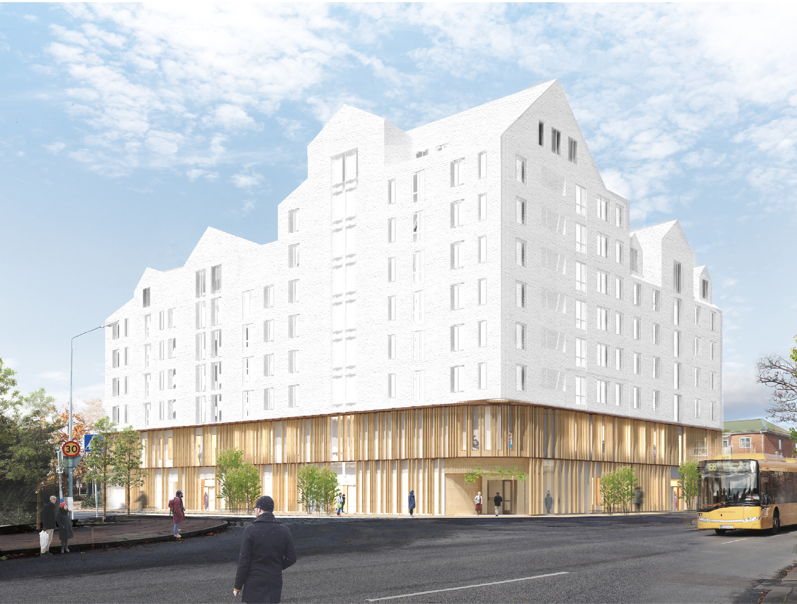
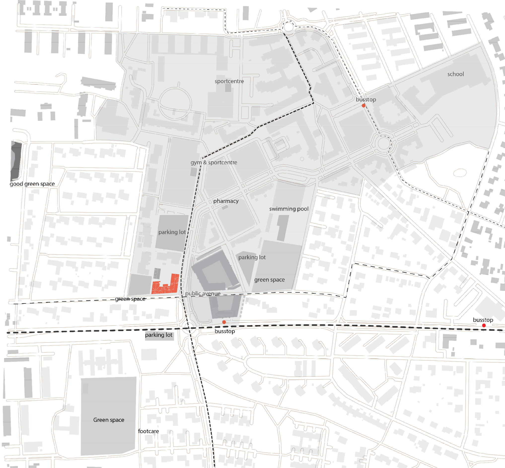
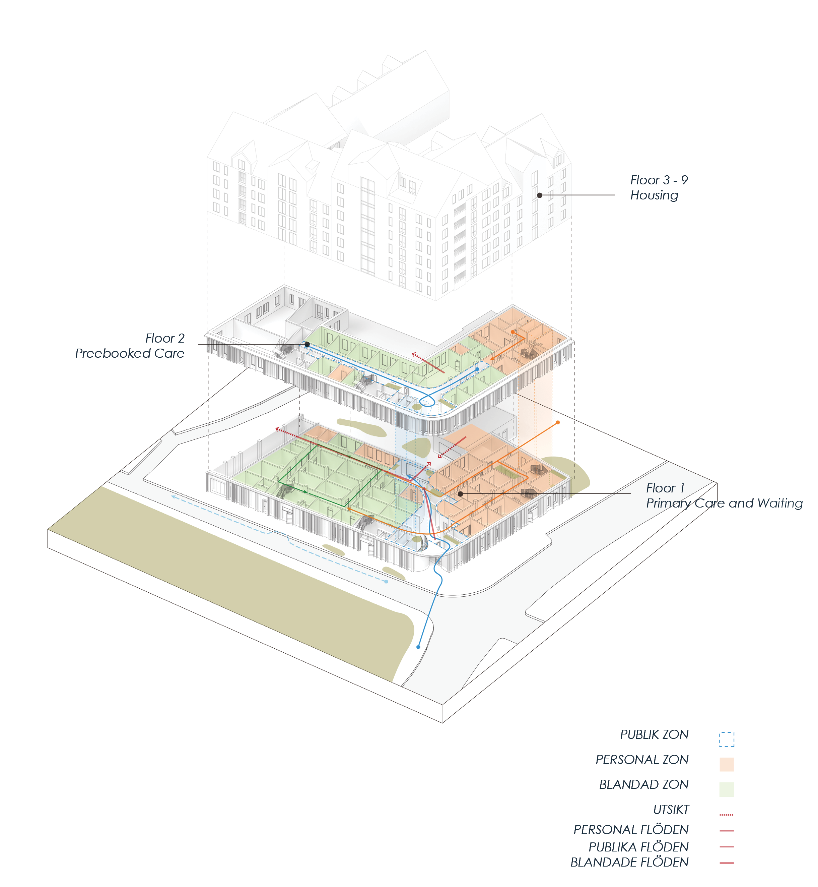
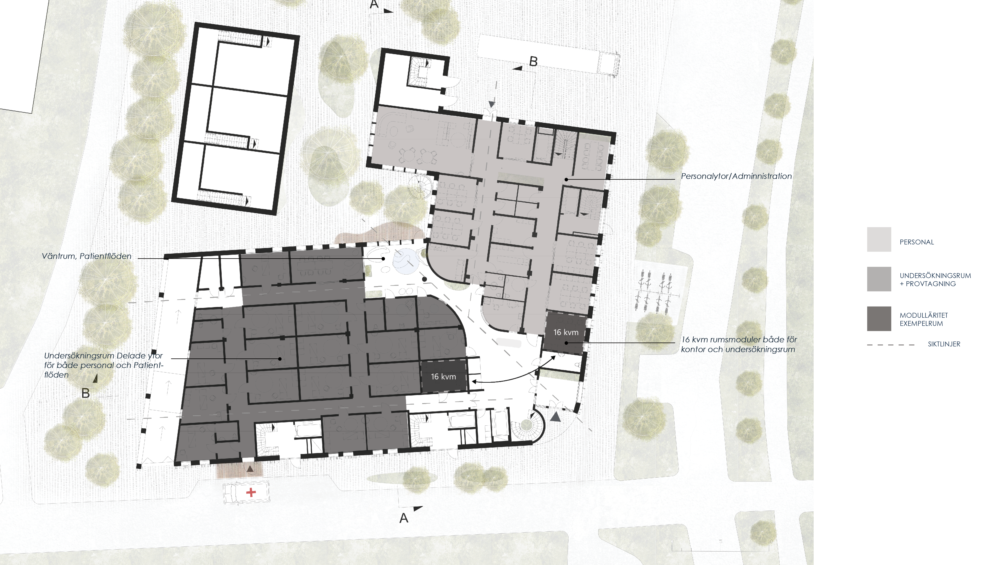
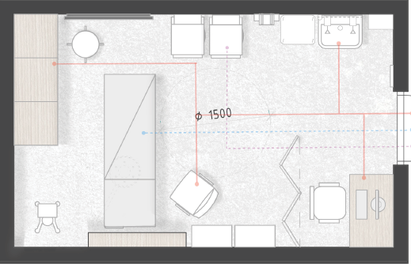
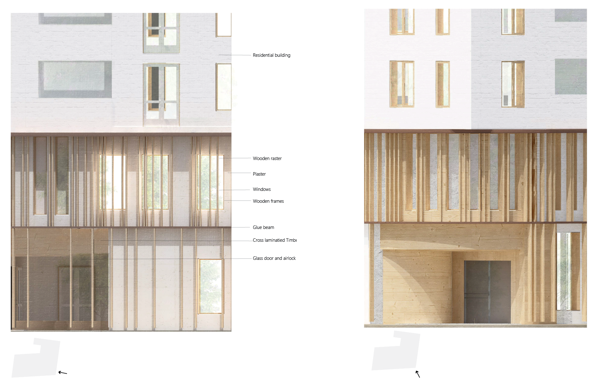
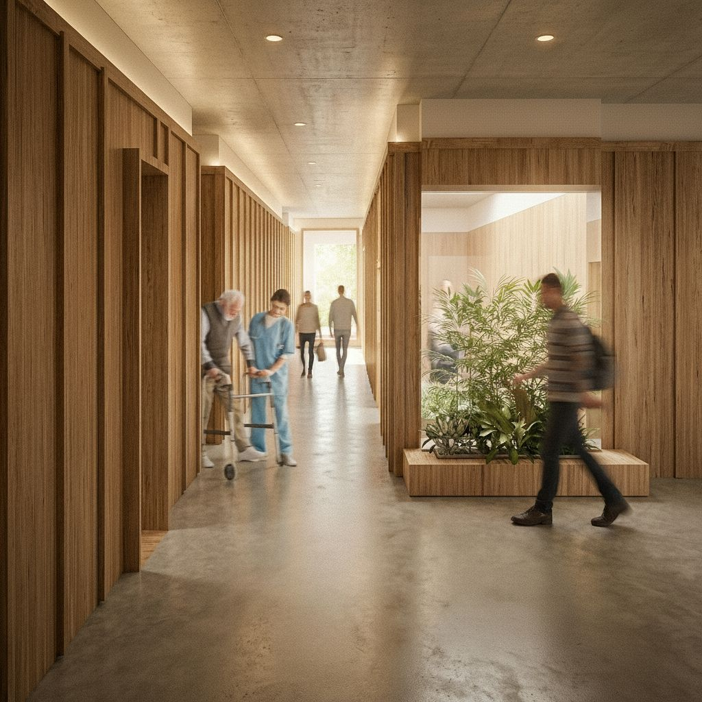
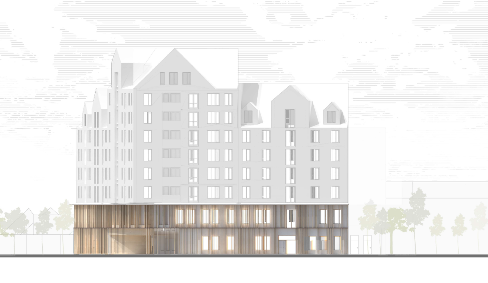

En vårdcentral i två våningsplan placerad i ett planerat bygge i Staffanstorp. Flexibilitet och ombyggnad som centrala designprinciper.
Flexibilitet och förmågan att anpassa befintliga byggnader för nya användningsområden har varit en drivande utgångspunkt. I stället för nyproduktion undersöker projektet hur en redan etablerad byggnads stomme kan omformas för vårdcentralsverksamhet.

Vårdcentralen är strategiskt placerad i relation till omgivande bebyggelse, kollektivtrafik och befintliga servicefunktioner i Staffanstorp. Analysen kartlägger rörelsemönster, siktlinjer och kringliggande grönstruktur som format hur byggnaden orienterats och hur entréer och utblickar har placerats.

Planlösningen separerar personal-, patient- och gemensamma flöden samtidigt som effektiva kopplingar säkerställs. Organisationen möjliggör korta gångavstånd och god överblick för personalen.


Undersökningsrummen är utformade med en större yta än den traditionella standarden. Dimensioneringen tar avstamp i det mest ytkrävande rummet , vilket möjliggör att samtliga rum kan brukas flexibelt och anpassas för olika medicinska specialiteter och framtida verksamhetsbehov.


Materialiteten präglas av varma ytor och mjukt formade element. Väntrummet är orienterat mot omgivande grönska med generösa utblickar mot naturen. Grönska integreras även i interiören för att stärka rummets biofiliska kvaliteter.

